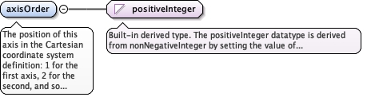

The axis being defined: normally the gml:id of agml:CoordinateSystemAxis in the Cartesian coordinate system of theparent diggs:LocalCartesianCRS, for example X, Y, Z, easting,northing, elevation, station or offset.
<element name="axisRef" type="gml:ReferenceType"><annotation><documentation>The axis being defined: normally the gml:id of a gml:CoordinateSystemAxis in the Cartesian coordinate system of the parent diggs:LocalCartesianCRS, for example X, Y, Z, easting, northing, elevation, station or offset.</documentation></annotation></element>
The position of this axis in the Cartesian coordinate systemdefinition: 1 for the first axis, 2 for the second, and so on. Itmatches each axis to its spatial extent when the axis order is notalphabetical.
Diagram

Type
positiveInteger
Properties
content
simple
Source
<element name="axisOrder" type="positiveInteger"><annotation><documentation>The position of this axis in the Cartesian coordinate system definition: 1 for the first axis, 2 for the second, and so on. It matches each axis to its spatial extent when the axis order is not alphabetical.</documentation></annotation></element>
The spatial direction and extent of this axis, as adiggs:LinearExtent in the spatial coordinate referencesystem. Its start point typically corresponds to the originlocation of the parent CRS, and the vector from start to endgives the positive direction and length of the axis. Giveeither this with an optional directionVector, ordirectionVector alone.
<element name="location" type="diggs:LinearExtentPropertyType" minOccurs="1"><annotation><documentation>The spatial direction and extent of this axis, as a diggs:LinearExtent in the spatial coordinate reference system. Its start point typically corresponds to the origin location of the parent CRS, and the vector from start to end gives the positive direction and length of the axis. Give either this with an optional directionVector, or directionVector alone.</documentation></annotation></element>
A unit vector giving the direction of this axis in spatialcoordinates, with components corresponding to the axes ofthe spatial CRS (typically X, Y, Z or easting, northing,elevation). Given with location, it supplements the linearextent and must be consistent with it.
<element name="directionVector" type="gml:VectorType" minOccurs="0"><annotation><documentation>A unit vector giving the direction of this axis in spatial coordinates, with components corresponding to the axes of the spatial CRS (typically X, Y, Z or easting, northing, elevation). Given with location, it supplements the linear extent and must be consistent with it.</documentation></annotation></element>
<element name="originOffset" type="double" minOccurs="0"><annotation><documentation>The value of the axis at its origin.</documentation></annotation></element>
Database handle for the object. It is of XML type ID, so is constrained to beunique in the XML document within which it occurs. An external identifier for the object inthe form of a URI may be constructed using standard XML and XPointer methods. This is doneby concatenating the URI for the document, a fragment separator, and the value of the idattribute.
Source
<complexType name="AxisLocationType"><complexContent><extension base="diggs:AbstractComponentObjectBaseType"><sequence><element name="axisRef" type="gml:ReferenceType"><annotation><documentation>The axis being defined: normally the gml:id of a gml:CoordinateSystemAxis in the Cartesian coordinate system of the parent diggs:LocalCartesianCRS, for example X, Y, Z, easting, northing, elevation, station or offset.</documentation></annotation></element><element name="axisOrder" type="positiveInteger"><annotation><documentation>The position of this axis in the Cartesian coordinate system definition: 1 for the first axis, 2 for the second, and so on. It matches each axis to its spatial extent when the axis order is not alphabetical.</documentation></annotation></element><choice><sequence><element name="location" type="diggs:LinearExtentPropertyType" minOccurs="1"><annotation><documentation>The spatial direction and extent of this axis, as a diggs:LinearExtent in the spatial coordinate reference system. Its start point typically corresponds to the origin location of the parent CRS, and the vector from start to end gives the positive direction and length of the axis. Give either this with an optional directionVector, or directionVector alone.</documentation></annotation></element><element name="directionVector" type="gml:VectorType" minOccurs="0"><annotation><documentation>A unit vector giving the direction of this axis in spatial coordinates, with components corresponding to the axes of the spatial CRS (typically X, Y, Z or easting, northing, elevation). Given with location, it supplements the linear extent and must be consistent with it.</documentation></annotation></element><element name="originOffset" type="double" minOccurs="0"><annotation><documentation>The value of the axis at its origin.</documentation></annotation></element></sequence><sequence><element name="directionVector" type="gml:VectorType" minOccurs="1"><annotation><documentation>A unit vector giving the direction of this axis in spatial coordinates, with components corresponding to the axes of the spatial CRS (typically X, Y, Z or easting, northing, elevation). Used when location is not given.</documentation></annotation></element><element name="originOffset" type="double" minOccurs="0"><annotation><documentation>The value of the axis at its origin.</documentation></annotation></element></sequence></choice></sequence></extension></complexContent></complexType>